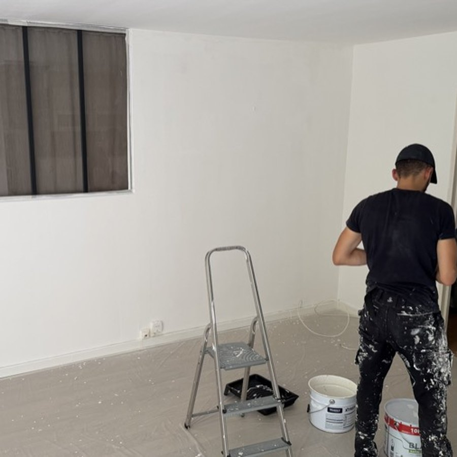

Rafraîchissement peinture de locaux à Paris, 92, 95 et 78
Un mur marqué, des trous de chevilles, un plafond jauni : avant la restitution d’un local ou l’arrivée d’un nouvel occupant, quelques reprises suffisent souvent. Le Béret Nettoyeur intervient à Paris, dans les Hauts-de-Seine, le Val-d’Oise et les Yvelines pour raccorder, reboucher et remettre en blanc.
-
Devis gratuit sous 24 h ouvrées
-
Entreprise assurée en responsabilité civile professionnelle
-
Noté 5,0 sur 5 par nos clients sur Google

Pourquoi nous confier votre rafraîchissement
Une reprise réussie se voit à ce qu’on ne la voit pas.
Des reprises traitées au pan entier, pas en rustine
Sur un mur déjà peint, une retouche localisée ressort presque toujours : écart de teinte, différence de brillance, auréole de rouleau. Nous traitons donc le pan entier, d'angle à angle, après rebouchage des trous de chevilles et ponçage des éraflures. Le mur reste homogène en lumière rasante, pas seulement vu de face.
Peinture et nettoyage par la même équipe
Le nettoyage de fin de chantier est notre spécialité : la poussière de ponçage est aspirée, les projections retirées des sols, des vitrages et des interrupteurs, les plaques reposées. Vous n'avez ni à enchaîner un peintre puis une société de nettoyage, ni à coordonner deux plannings.
Calé sur le calendrier d'un état des lieux
Nous travaillons pour des particuliers, des propriétaires bailleurs et des professionnels de la location courte durée : l'intervention se cale entre deux locataires. Devis gratuit sous 24 h ouvrées, chantiers du lundi au samedi, de 9 h à 19 h.
Une entreprise assurée, un interlocuteur unique
Le Béret Nettoyeur est assuré en responsabilité civile professionnelle. Lucas, le gérant, suit le chantier du devis à la réception : une seule personne à qui poser vos questions, sur place comme au téléphone. Note de 5,0/5 sur 17 avis Google.
Un devis clair avant le premier coup de rouleau
Nous regardons l'état réel des supports — fond absorbant, anciennes reprises, fissures, auréoles — avant de chiffrer. La prestation est établie sur devis personnalisé selon la surface, avec le détail de ce qui est repris, du nombre de couches et des boiseries incluses.
Les supports que nous reprenons
Les supports sur lesquels nous intervenons.
Notre méthode, étape par étape
De la préparation du support à la reprise finale.
Diagnostic des supports et devis
Sur place ou à partir de vos photos, nous identifions le type de support (plaque de plâtre, plâtre ancien, toile de verre, bois), l'absorption du fond, les fissures, les auréoles et les anciennes reprises. Nous définissons ce qui peut se raccorder et ce qui doit être repeint entièrement, puis vous recevez un devis gratuit sous 24 h ouvrées : la prestation est chiffrée sur devis personnalisé selon la surface.
Protection et préparation des supports
Bâches au sol, adhésif de masquage à faible adhérence sur les plinthes, huisseries et finitions fragiles, dépose des plaques d'interrupteurs. Les murs sont dégraissés puis rincés à l'eau claire : une peinture appliquée sur un support gras ou poussiéreux n'accroche pas. Les trous de chevilles sont repris à l'enduit de rebouchage, les éraflures et micro-défauts à l'enduit de lissage, les fissures ouvertes avec un calicot. Ponçage au grain fin, puis dépoussiérage complet.
Sous-couche adaptée, puis deux couches de finition
Primaire d'accrochage sur enduit neuf, plaque de plâtre et fonds absorbants ; primaire isolant anti-taches sur les auréoles, la suie et les traces de nicotine, faute de quoi elles remontent à travers la finition. Ensuite deux couches croisées : acrylique mate sur les plafonds et les murs, finition satinée lessivable en cuisine, salle de bains et sur les boiseries, après égrenage et sous-couche d'accrochage sur les supports vernis ou laqués. Angles et rechampis à la brosse, surfaces au rouleau adapté à la finition, en respectant le temps de recouvrement indiqué par le fabricant.
Retrait des protections, nettoyage et contrôle
Le masquage est retiré avant durcissement complet du film, pour ne pas arracher la peinture sur les arêtes. Nous aspirons les poussières de ponçage, reposons les plaques, nettoyons les sols et les éventuelles projections. Dernier tour des pièces avec vous en lumière rasante : nous vous montrons le travail zone par zone et reprenons ce qui doit l'être avant de partir.
Questions fréquentes sur le rafraîchissement peinture
Une question qui n’est pas là ? Appelez-nous au 06 99 01 12 57, du lundi au samedi de 9 h à 19 h.
Faut-il repeindre tout le mur ou seulement la zone abîmée ?
Sur un mur déjà peint, une retouche localisée reste presque toujours visible : la teinte a évolué avec la lumière et le nouveau film n'a pas la même brillance. Nous repeignons donc le pan entier, d'angle à angle ou jusqu'à une rupture naturelle (retour de cloison, tableau électrique). Quand la peinture est récente, de teinte standard et la zone petite, un raccord peut passer : nous vous le disons au devis, pas après coup.
Quel est le prix d'un rafraîchissement peinture ?
Sur devis personnalisé selon la surface à reprendre. Nous chiffrons au pan de mur entier, pas à la zone : c'est la seule façon d'obtenir une reprise qui ne se voit pas. Le devis précise les surfaces concernées, pour que vous sachiez exactement ce qui est repris et ce qui ne l'est pas. Il est gratuit et vous parvient sous 24 h ouvrées.
Peut-on intervenir dans un local encore occupé ?
C'est plus simple dans un local vide, en particulier avant une restitution. Si le mobilier reste, nous travaillons zone par zone : postes regroupés et bâchés, sols protégés, matériel et prises masqués. Nous utilisons des peintures en phase aqueuse, faiblement odorantes, nous ventilons, et nous respectons les temps de séchage avant remise en service. Pour un site en activité, nous intervenons volontiers le soir ou le week-end.
Que faites-vous des traces d'humidité, de fumée ou de nicotine ?
Ces traces ne se couvrent pas simplement : elles ressortent à travers la peinture au bout de quelques semaines. Nous dégraissons d'abord au produit alcalin, nous rinçons à l'eau claire, puis nous appliquons un primaire isolant anti-remontée de taches avant la finition. Si l'auréole vient d'une infiltration encore active ou d'un défaut de ventilation, nous vous le signalons : la cause doit être traitée avant de repeindre, sinon le désordre revient.
Demandez votre devis gratuit au 06 99 01 12 57
Décrivez-nous votre besoin, ou envoyez-nous simplement des photos par SMS. Tarif sur devis personnalisé selon la surface, réponse sous 24 h ouvrées.